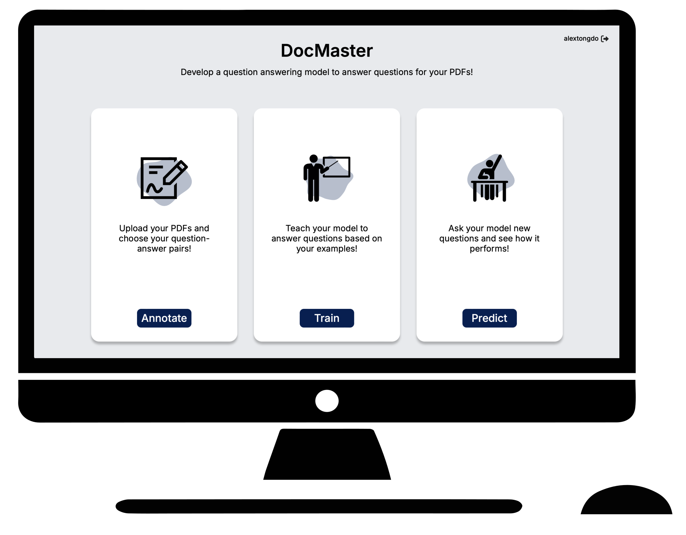

No Longer ISPO Assistant
An end-to-end question answering tool that can answer any questions about your PDFs using personalized AI models. Unlike other AI services, all data and models are hosted locally and never exposed to the open internet making this application perfect for security sensitive documents.

Step 1: Annotate
Upload a few PDFs and label the answers to some questions to give your AI model some examples to learn from.
Mark the expected answer to a question by highlighting text in the document you uploaded!
Step 2: Train
Choose from a few different base architectures to train your personalized model!
For example, if your answers occur in a regular layout on your documents, choose a layout model such as Impira,
which takes into account the position of each word.
Step 3: Predict
Pick one of the models you've previously trained to answer some questions about an unseen PDF.
The model's predictions will be highlighted on the document and shown in the table.
Click on rows of the table to skip to page where that prediction occurs on the PDF.
Contributors

Alex Nguyen
Team Member
Dheeraj Mekala
Advisor
Zilong Wang
Advisor

Jingbo Shang
Advisor